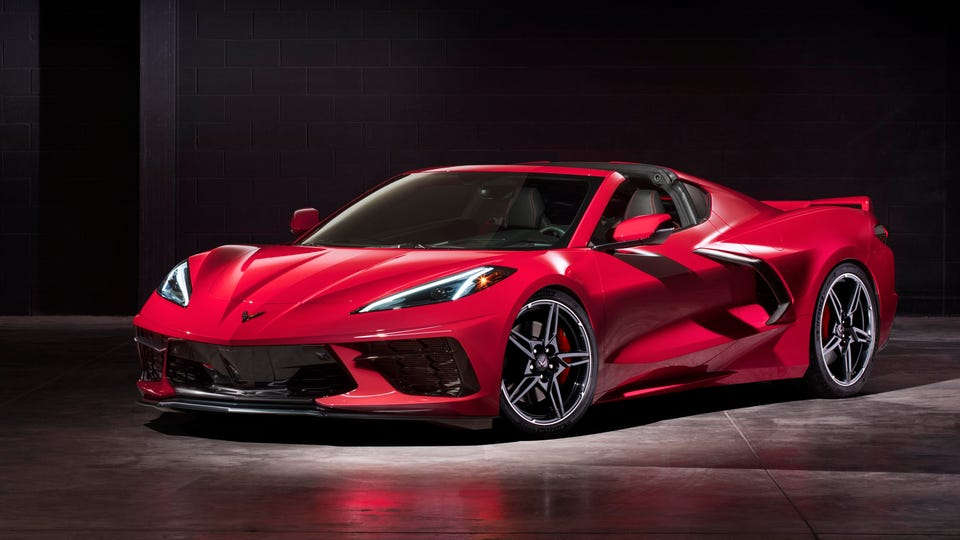
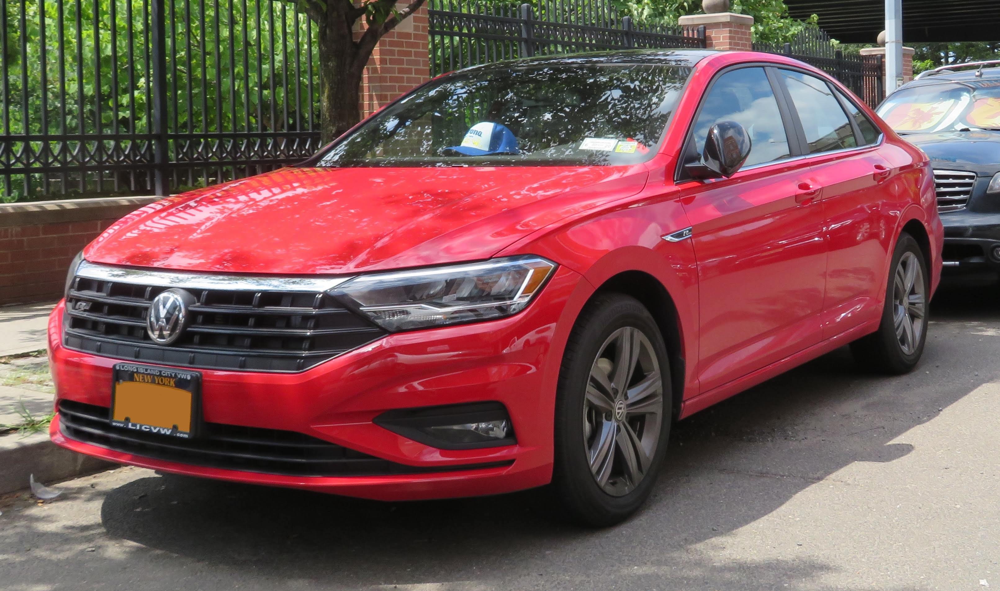

Are you purchasing a new car? Are you stuck on what to get? Worry no more. Now at the____ company you are able to see what vehicles are best for the category you are looking for. When buying a new car many customers are unsure of which line of vehicles suits them best.
Chevrolet CorvetteStarting at $62,195 The Chevrolet Corvette is one of the best and known sports cars for the almost the last 70 years. The Corvette is the ultimate American sports car and is the dream of many car enthusiasts to own one one day. The all new 2022 chevy corvette has brought in all new super car performance while still having a luxurious cabin and daily driving capabilities. The Corvette has always been a sports car that has been a bit more affordable than others while still having the same performance abilities. What makes the corvette not as appealing than other sports cars is that it is American made and doesn’t have the foreign engineers that a super car needs.
Mercedes SLStarting at $91,995 The Mercedes SL is also a classical statement sports vehicle that has been a big name for a very long time. While Mercedes has not always been known for having the best sports cars, the SL has always been the most luxurious one you can get. Mercedes has been doing its been to update the SL has needed and has been doing a very good job. The length of the front of the vehicle compared to the rest makes its versatile while taking turns and makes the handling much easier. The overall adversity of having high end performance capabilities and being so luxurious at the same time is what makes this car so special.

Audi R8- Starting at $147,995 The Audi R8 has always been the ultimate four wheel drive sports car. Being that the car is not rear wheel drive all four wheels spin at the same time so when the car accelerates it gets off the line quicker because it is able to catch grip. The car has always had a very eye catching look for an Audi because it is a super car somewhat. Audi and the R8 are also very special because that car has a V10 engine which is very rare in a car. Most sports cars have a V8 and V12 engines. But that is why the R8 is so special. Audi has always been known for its special engines just like their 5 cylinder that nobody else carries.

Kia TellurideStarting at $34,015 The Telluride is an all new vehicle for Kia and was first released in 2020. It is supposed to be their ultimate SUV and it has been doing better than ever. The vehicle is perfect for hauling families in comfort and style. The new SUV was marketed as a truck for families that is still somewhat affordable and still carries some luxury features that one would want. There is a seven or eight passenger option depending on if you would like a bench seat or captains chairs in the second row. This vehicle is great for families looking for many features in a SUV in a decent price range.
Volkswagen JettaStarting at $19,990 VW has always been known for having one of the most affordable Germen engineered vehicles. The Jetta has been a staple since it first released in 1979. It is best known for its fuel economy as it is estimated to make 30 miles per gallon around town and 40 mpg on the highways. And the manual transmission was tested against the automatic and it actually got an astonishing 48mpg. So if you are interested in stick shift and good fuel economy this is definitely the car for you.
Honda AccordStarting at $25,985 While the Accord is priced slightly higher than the Jetta, its base model does come with more features than the basic Jetta. The Accord is known for its effortlessly balanced steering and its durability. Hondas as well as Toyotas are renown for being able to last for extended periods of time. The Accord is also a very spacious sedan. It is approximately 196” inches in length while the Jetta is only 185”. The Accord is has a five-star safety rating from the National Highway Traffic Safety Administration and will notably be a vehicle that you will not regret purchasing. Suv’s: Hyundai PalisadeStarting at $33,860 The Palisade as well is a brand new vehicle that was released in 2020. Kia and Hyundai are actually both South Korean manufacturers that are made in the same factory. So the Kia Telluride and Hyundai Palisade are in fact made on the same chassis. The Palisade is also meant for holding larger families in their new SUV with an updated infotainment system. Although the Palisade and Telluride are very similar the Hyundai has its distinct look that appeals to the brand and has also been doing very well this year for the SUV.
Mercedes s580- Starting at $109,800 The Mercedes S class has always been the ultimate luxury sedan. Literally known as one of the best cars on the road. This car checks off everything from luxury to speed. The length of the luxury sedan has made it very appealing for the rich and famous to use this vehicle with a driver because it is just so comfortable back there. The driving capability of the car has been more advanced than the average vehicle for at least the past 10 years. The new infotainment system is modeled off the Tesla that has the large iPad looking touch screen in the center console. The vehicle has been renowned for its array of luxury features and driving capabilities. BMW 750iStarting at $87,795 The BMW extra-long sedan has always been the biggest competitor of the Mercedes S class. The two have been atop the luxury sedan world for a very long time. The BMW still gives off the same luxurious and comfortable features, but has much more of a sporty feel to it. Although the BMW is much sporty and louder it isn’t that much faster than the Mercedes. Only a half second actually going 0-60mph. The BMW gives you everything you need in a luxury sedan with the extra leg room, rear mirrors for the passengers, and the reclining seats in the back. With the speed and luxury of this car it will always be just under the S class because some believe it to be too sporty for a luxury car. Suvs: Starting at $56,750 Mercedes GLEThe Mercedes GLE previously known as the ML is the Mercedes SUV to get. When Mercedes released its first SUV in 1997, the ML, it was the hottest thing to hit the market and was selling like no other unexpectedly. The factory was very shocked on how fast the units were selling and didn’t have enough man power to keep producing them without back orders. Its new updated cabin has been very appealing as it has taken on the old look of the S class infotainment system. The car is very upscale appealing and it is also spacious holding a third row. Porsche CayenneStarting at $68,850 The Porsche Cayenne was a very unexpected release to the car world in 2003 when it released an SUV. Porsche was known for always having the most high end driving vehicle. Porsche has always advertised itself as a drivers vehicle meaning it is meant for someone who knows how to appreciate a real driving machine. The Cayenne did just that from higher up. Not only does the car hold to its name of being fast and driving well it is also very luxurious. The car is still meant to stand up to the needs of someone needing a luxury SUV while still trying to give the best driving experience possible.